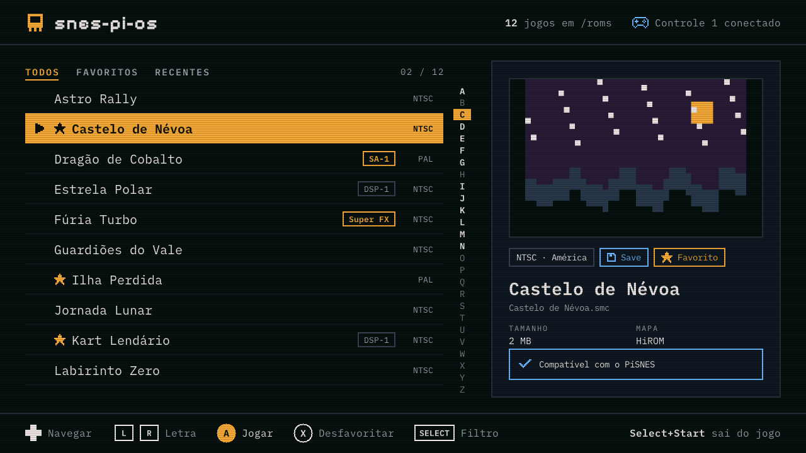
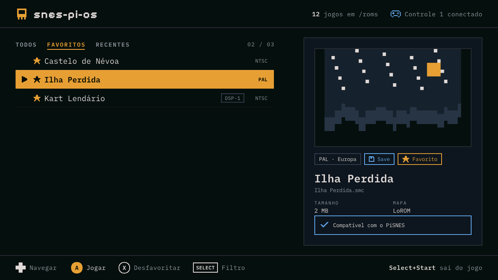
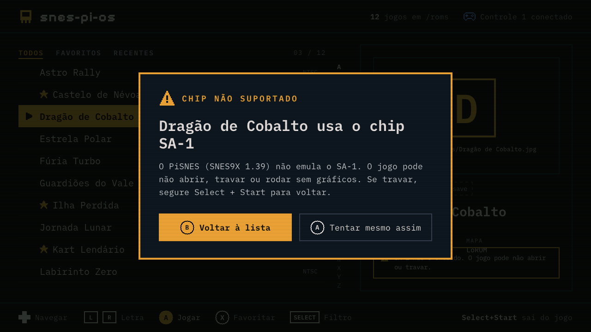
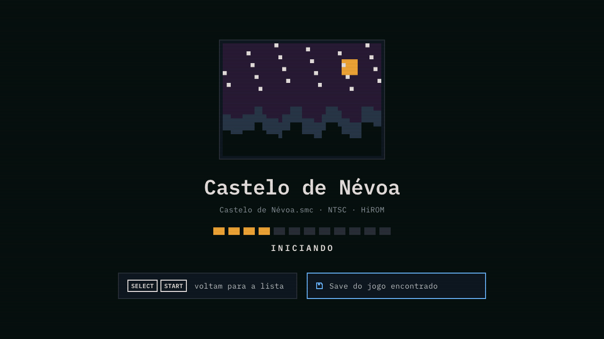
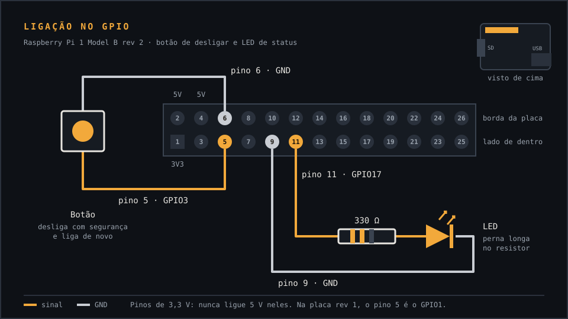

Liga, escolhe o jogo, joga.
O snes-pi-os transforma um Raspberry Pi 1 num console de Super Nintendo. Sem área de trabalho, sem configurar nada: o aparelho liga direto num menu com seus jogos, capas e saves.
Gratuito e de código aberto. Ainda não foi testado em um Raspberry Pi de verdade: a primeira versão para testes está saindo agora.

POR QUE USAR
Feito para um aparelho só, e só para jogar
Em vez de uma distribuição Linux inteira, o snes-pi-os leva apenas o necessário para o Pi 1 rodar jogos de SNES. O resultado é um boot curto e um sistema que aguenta ser desligado direto na tomada.
Direto no menu
Liga e cai na lista de jogos. Ao sair de um jogo, volta para ela.
Capas dos jogos
Coloque uma imagem com o mesmo nome da ROM e ela aparece no menu.
Favoritos e recentes
Marque seus jogos preferidos e volte rápido aos 5 últimos que abriu.
Saves automáticos
O progresso salvo no jogo é gravado no cartão ao sair, sem menu nenhum.
Pode tirar da tomada
O sistema fica protegido contra escrita; só a pasta de jogos e saves é gravada.
Avisa antes de travar
Jogos com chips que o emulador não suporta mostram um aviso antes de abrir.
ANTES DE COMEÇAR
O que você precisa
- Raspberry Pi 1Model B de 512 MB (o de 2 portas USB). O Model B+ também deve funcionar.
- Cartão SDDe 2 GB ou mais. O Model B usa o cartão SD de tamanho normal (um microSD com adaptador também serve).
- FonteMicro-USB de 5 V. Prefira uma de 2 A, principalmente com controle de Xbox, que puxa bastante energia.
- TV ou monitorCom entrada HDMI. O menu foi feito para 720p e a imagem é ajustada à tela.
- ControleControle USB (o de Xbox 360 com fio é o mais garantido) ou um teclado USB.
- Um computadorPara gravar a imagem no cartão e copiar os jogos.
INSTALAÇÃO
Do download ao primeiro jogo, em 4 passos
Não precisa saber Linux. Tudo é feito no seu computador, gravando um arquivo no cartão SD.
-
Baixe a imagem
Na página de versões no GitHub, baixe o arquivo
snes-pi-os-…img.xzda versão mais recente (cerca de 30 MB). Enquanto o projeto estiver em testes, as versões aparecem como “pré-lançamento”. -
Grave no cartão SD
Use o Raspberry Pi Imager (opção “Usar personalizado”) ou o balenaEtcher. Os dois aceitam o arquivo
.xzdireto, sem descompactar.Atenção: tudo o que estiver no cartão será apagado.
-
Ligue e teste
Coloque o cartão no Pi, ligue o HDMI e o controle, e então a energia. O menu já vem com dois jogos de teste gratuitos:
- Teste - Controles: acende na tela cada botão que você aperta.
- Teste - Breakout: um jogo completo para conferir imagem e som.
-
Coloque seus jogos
Desligue o Pi e ponha o cartão no computador. Aparece uma unidade chamada ROMS: copie para ela os seus jogos (
.sfc,.smc,.figou.swc).Para ter capas, crie a pasta
capase coloque imagens.jpgou.pngcom o mesmo nome da ROM. Exemplo:Meu Jogo.sfcecapas/Meu Jogo.jpg.
O MENU
Simples de usar com o controle
Todas as telas abaixo são do menu de verdade, geradas com jogos de teste.



CONTROLES
Controle de Xbox ou teclado
No menu, os botões seguem o controle de Xbox: A confirma e B volta. Dentro do jogo vale o layout do Super Nintendo, pela posição dos botões.
| AÇÃO NO MENU | CONTROLE DE XBOX | TECLADO |
|---|---|---|
| Navegar na lista | Direcional | Setas |
| Jogar | A | Enter |
| Voltar (no aviso) | B | Esc |
| Favoritar / desfavoritar | X | S |
| Todos / Favoritos / Recentes | Back | Tab |
| Letra anterior / seguinte | LB RB | A Z |
| Menu do sistema (desligar, reiniciar) | Start | Espaço |
| NO JOGO (SUPER NINTENDO) | CONTROLE DE XBOX | TECLADO |
|---|---|---|
| A / B / X / Y | B A Y X | C X D S |
| L / R | LB RB | A Z |
| Start / Select | Start Back | Enter Espaço |
| Sair do jogo e voltar ao menu | Back + Start | Esc |
COMPATIBILIDADE
O que roda (e o que não roda)
O emulador é o PiSNES, baseado no SNES9X 1.39: uma versão antiga, escolhida porque é leve o bastante para o processador de 700 MHz do Pi 1. A maioria dos jogos funciona, mas a precisão é menor que a de emuladores recentes.
Não funcionam
Jogos com estes chips especiais no cartucho. O menu avisa antes de abrir:
- Super FX
- SA-1
- SDD-1
- C4
- SPC7110
- S-RTC
Funcionam
Jogos sem chip especial e os que usam o DSP-1, emulado pelo PiSNES:
- Sem chip
- DSP-1
OPCIONAL
Botão de desligar e LED de status
Sem botão, desligue pelo menu: aperte Start (ou Espaço no teclado) e escolha Desligar. Se quiser um botão de verdade, como num console, ligue um botão e um LED nos pinos do Pi. Não precisa configurar nada: a imagem já vem pronta para eles.

Peças
- Um botão de pressão comum (normalmente aberto)
- Um LED de 3 ou 5 mm, de qualquer cor
- Um resistor de 330 Ω
- Fios com conector fêmea (jumpers) para os pinos
Como funciona
- Botão: fecha o jogo gravando o save e desliga. Com o aparelho desligado, o mesmo botão liga de novo.
- LED: pisca enquanto liga, fica aceso no menu e pisca rápido ao desligar. Apagou, pode tirar da tomada.
DÚVIDAS E PROBLEMAS
Perguntas frequentes
A tela fica preta ao ligar
Confira se o HDMI estava ligado antes de ligar o Pi e se a TV está na entrada certa. Se o menu aparece mas a tela fica preta ao abrir um jogo, avise no GitHub: o vídeo dos jogos depende da parte gráfica do Pi, que ainda está sendo validada.
O controle não responde
Ligue o controle antes de ligar o Pi, ou espere alguns segundos depois de conectar. Se o Pi reiniciar ou o controle desconectar sozinho, a fonte ou as portas USB podem não estar dando conta: use uma fonte de 2 A ou um hub USB com alimentação própria.
Aparece “A partição de jogos não abriu”
O cartão provavelmente foi desligado no meio de uma gravação. Ponha o cartão no computador e verifique a unidade ROMS (Windows: “Verificar erros”; macOS: Utilitário de Disco › Primeiros socorros). Se a unidade não aparecer, grave a imagem de novo.
Como saio de um jogo?
Aperte Back + Start juntos no controle (ou Esc no teclado). O jogo grava o save e você volta ao menu.
Posso desligar direto na tomada?
O jeito mais seguro é pelo menu: aperte Start e escolha Desligar (ou use o botão de desligar). Tirar direto da tomada funciona se estiver no menu e não no meio de um jogo salvando: o sistema fica protegido contra escrita e só a unidade ROMS (jogos, capas e saves) é gravada.
Funciona com Wi-Fi ou Bluetooth?
Não. O Raspberry Pi 1 não tem Wi-Fi nem Bluetooth. Controles sem fio só funcionam com receptor USB próprio (como o receptor de controle de Xbox 360). Um modo para enviar jogos pela rede, por cabo, está nos planos.
A unidade ROMS ficou pequena
Ela vem com 512 MB, suficiente para muitos jogos de SNES. Para mais espaço, aumente a partição ROMS no computador depois de gravar o cartão, com um programa como o GParted.
Onde consigo jogos?
Use cópias dos seus próprios cartuchos ou jogos independentes (homebrew) distribuídos gratuitamente pelos autores. O projeto não indica nem distribui jogos comerciais.
EM BREVE
Enviar jogos pela rede
Com um cabo de rede, o menu vai mostrar um endereço e um código QR: abra no celular, escolha os arquivos e eles vão direto para o cartão, sem tirar o cartão do Pi.